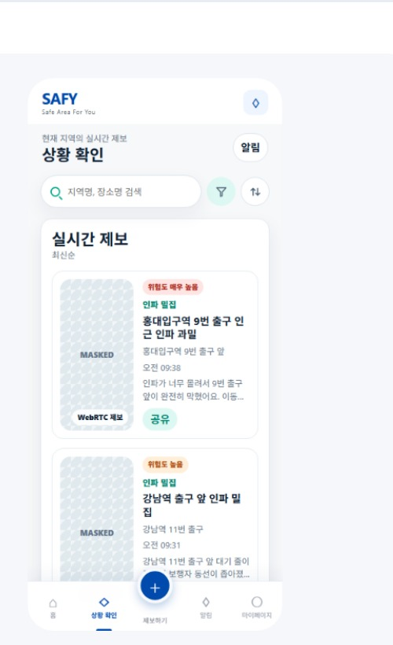
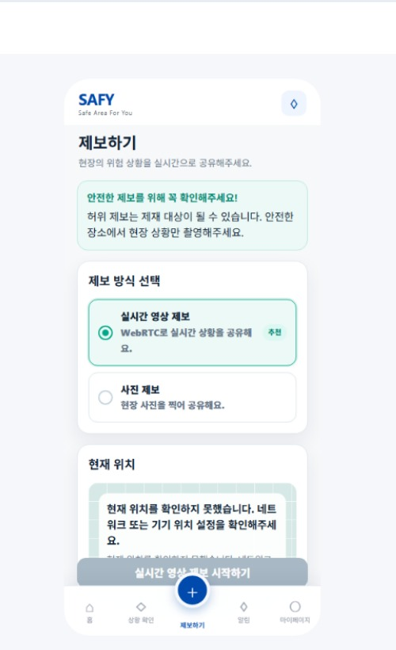
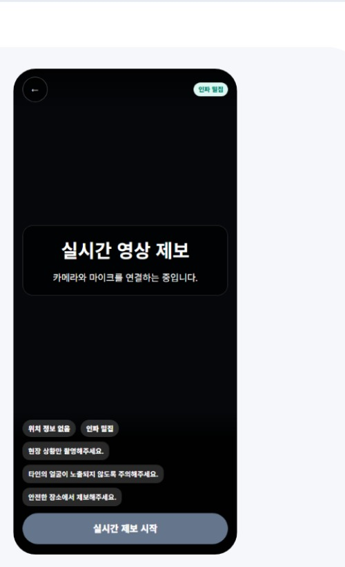

Grid boundary
100m 격자 위험도 엔진
Java와 TypeScript가 동일한 좌표를 같은 셀로 해석하도록 IEEE-754 연산 순서와 음수 인덱스 규칙을 값 객체에 고정했습니다.
Backend Engineer · Seoul
정상 흐름뿐 아니라 실패 이후에 남는 상태까지 설계합니다. Java와 Spring으로 경계를 분명히 하고, 운영 가능한 백엔드를 만듭니다.
↓정책을 코드로,
경계를 구조로,
결과를 숫자로.
문제의 원인을 특정 계층에 단정하지 않습니다. 데이터, 시간, 캐시, 상태 전이를 나누어 실제 병목과 실패 지점을 찾습니다.
구현만 끝내지 않습니다. 동시성 테스트, 측정 기준, 보존 정책까지 남겨 다음 사람이 시스템을 설명할 수 있게 합니다.
SAFY / 2026
설계 판단과 검증 가능한 결과를 함께 기록했습니다.
Grid boundary
Java와 TypeScript가 동일한 좌표를 같은 셀로 해석하도록 IEEE-754 연산 순서와 음수 인덱스 규칙을 값 객체에 고정했습니다.
State history
최근 제보, 공공데이터, 직전 활성 셀을 함께 평가하되 값이 바뀐 셀만 기록해 이력 폭증을 막았습니다.
Latency
백엔드 시간 창, HTTP 캐시, 프론트 갱신을 각각 측정했습니다. 승인 이벤트 계산, 짧은 캐시, 30초 갱신으로 병목을 줄였습니다.
Idempotency
PostgreSQL 원자적 claim과 요청 fingerprint를 결합해 같은 본문은 기존 결과를 재사용하고 다른 본문은 409로 분리했습니다.
Web Push lifecycle
4xx는 종료하고 429만 재시도합니다. 중단된 작업 회수, 병렬 발송, 완료 보존 정책을 하나의 수명주기로 정리했습니다.
서버와 클라이언트, 도메인과 프레임워크가 각자의 판단만 갖게 합니다.
성공과 실패가 모두 데이터로 설명되도록 전이와 보존 기준을 정합니다.
재시도, 회수, 만료처럼 실제 운영에서 반복되는 조건을 먼저 모델링합니다.
기여 범위와 측정 조건을 분리하고 숫자로 결과를 확인합니다.

시민 API와 관제 API를 분리하고 공개 전용 DTO로 정보 경계를 확보했습니다.

주소 확정을 서버로 이동했습니다.

시민과 관제의 자산 노출을 분리했습니다.
Built for